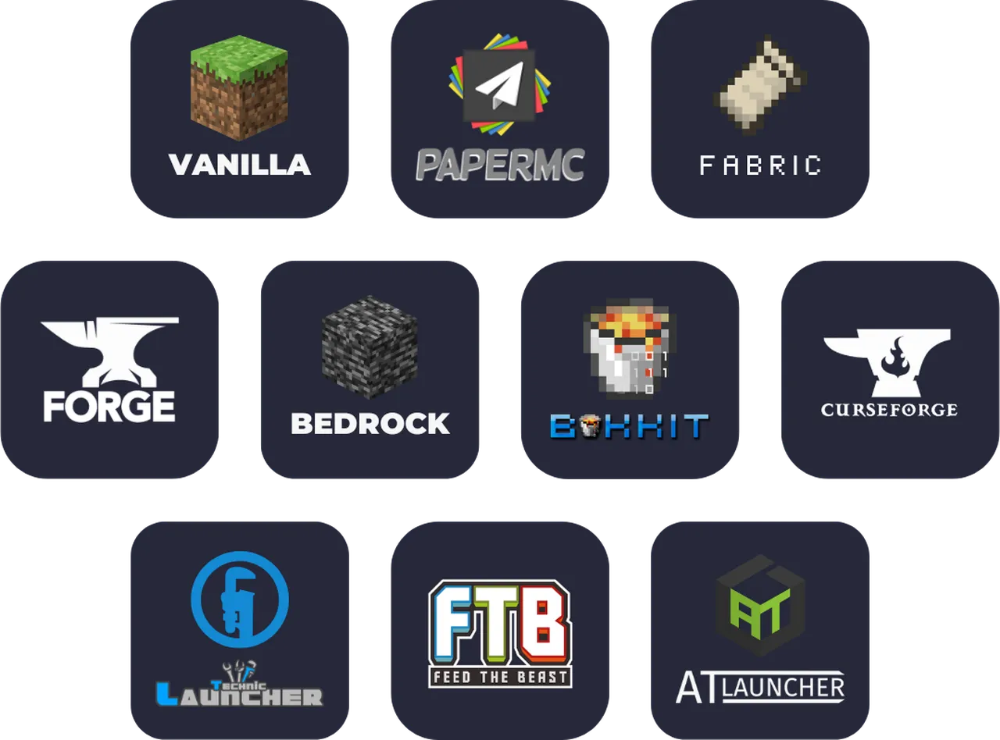

🔧 Rodzaje Serwerów
Istnieje wiele typów serwerów Minecraft, każdy z unikalnymi cechami i zastosowaniami. Wybór odpowiedniego typu serwera jest kluczowy dla sukcesu twojego projektu.
Vanilla Server
Oficjalny serwer Minecraft od Mojang. Jest to najprostsza forma serwera, oferująca czystą rozgrywkę bez modyfikacji.
Bukkit/Spigot
Spigot to zmodyfikowana wersja serwera, która umożliwia instalację pluginów i oferuje lepszą wydajność niż vanilla.
Paper
Paper to fork Spigota z dodatkowymi optymalizacjami i możliwościami konfiguracyjnymi. Jest to obecnie najpopularniejszy wybór dla większości serwerów.
Forge/Fabric
Platformy do serwerów z modami. Wymagają od graczy instalacji tych samych modów na kliencie.
💻 Wymagania Sprzętowe
Dobór odpowiedniego sprzętu to fundament działającego serwera. Zbyt słaby sprzęt spowoduje lagi i problemy z wydajnością.
Procesor (CPU)
Minecraft jest grą zależną od pojedynczego wątku procesora. Lepiej wybrać CPU z wysokim taktowaniem niż z dużą liczbą rdzeni.
Pamięć RAM
Ilość potrzebnej pamięci RAM zależy od liczby graczy i zainstalowanych pluginów.
| Liczba graczy | Minimalna RAM | Zalecana RAM |
|---|---|---|
| 1-5 | 1 GB | 2 GB |
| 5-10 | 2 GB | 3-4 GB |
| 10-20 | 3 GB | 4-6 GB |
| 20-50 | 4 GB | 6-8 GB |
| 50-100 | 6 GB | 8-12 GB |
| 100+ | 8+ GB | 16+ GB |
Dysk
SSD jest niemal niezbędny dla płynnego działania serwera. HDD spowoduje znaczne spowolnienia podczas ładowania chunków.
📦 Pierwsza Instalacja
Instalacja serwera Minecraft jest procesem prostym, ale wymaga wykonania kilku kroków w odpowiedniej kolejności.
Krok 1: Instalacja Java
Minecraft wymaga środowiska Java. Dla wersji 1.17+ wymagana jest Java 17 lub nowsza, dla starszych wersji Java 8.
Krok 2: Pobranie pliku serwera
W zależności od wybranego typu serwera, pobierz odpowiedni plik .jar:
- Paper: papermc.io/downloads (zalecane)
- Spigot: getbukkit.org/download/spigot
- Vanilla: minecraft.net/download/server
Krok 3: Utworzenie folderu serwera
Utwórz dedykowany folder dla serwera i umieść w nim pobrany plik .jar
Krok 4: Pierwsze uruchomienie
Uruchom serwer po raz pierwszy, aby wygenerować pliki konfiguracyjne:
Pierwsze uruchomienie zakończy się błędem - to normalne! Musisz zaakceptować EULA.
Krok 5: Akceptacja EULA
Otwórz plik eula.txt i zmień wartość false na true:
🚀 Uruchomienie Serwera
Po zaakceptowaniu EULA, możesz uruchomić serwer ponownie. Tym razem wszystko powinno działać poprawnie.
Podstawowy skrypt startowy
Utwórz plik start.bat (Windows) lub start.sh (Linux) z następującą zawartością:
Zaawansowany skrypt z flagami Aikar
Dla lepszej wydajności, użyj optymalizowanych flag JVM:

🎮 Pierwsze Logowanie
Po uruchomieniu serwera, możesz się zalogować używając adresu localhost lub IP serwera.
Logowanie lokalne
W Minecraft, wybierz Multiplayer → Add Server i wpisz:
Nadawanie uprawnień administratora
W konsoli serwera wpisz:
Podstawowe komendy serwera
| Komenda | Opis |
|---|---|
| /stop | Zatrzymuje serwer |
| /whitelist add [gracz] | Dodaje gracza do whitelisty |
| /op [gracz] | Nadaje uprawnienia administratora |
| /gamemode [tryb] [gracz] | Zmienia tryb gry |
| /tp [gracz] [cel] | Teleportuje gracza |